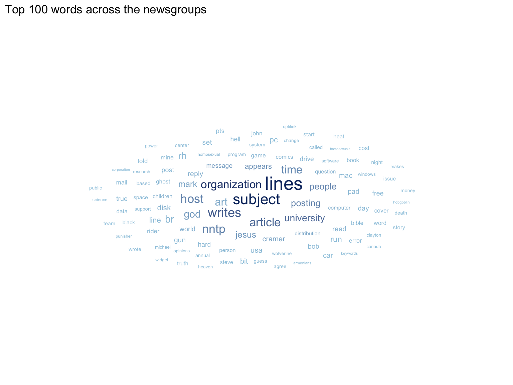
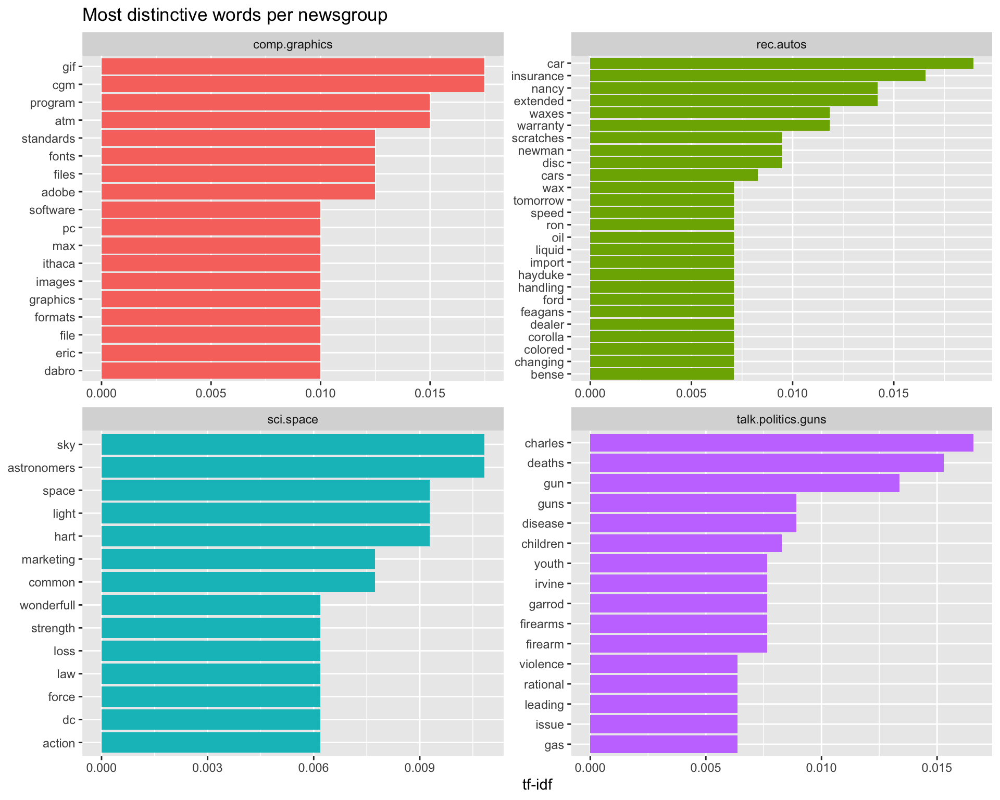
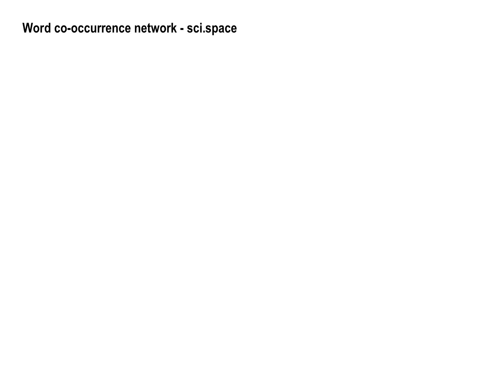

Code
if (!require(pacman)) install.packages("pacman")
pacman::p_load(
tidytext, widyr, wordcloud, ggwordcloud,
igraph, ggraph, tidygraph, tidyverse
)
news20 <- read_rds("data/rds/news20.rds")Visualising and Analysing Text Data with R: tidytext methods
Jedidiah Asaf T
This hands-on exercise recreates the key techniques from Chapter 29 of R for Visual Analytics. Using a subset of the 20-Newsgroups corpus, it applies tidytext methods to tokenise text, build word clouds, compute tf-idf to find each group’s distinctive words, and draw a word co-occurrence network.
Each line is split into words, stop-words and non-alphabetic tokens are removed.

bind_tf_idf() finds the words that are characteristic of each newsgroup rather than common everywhere.
groups <- c("sci.space", "rec.autos", "talk.politics.guns", "comp.graphics")
tf_idf <- usenet_words %>%
filter(newsgroup %in% groups) %>%
count(newsgroup, word) %>%
bind_tf_idf(word, newsgroup, n) %>%
group_by(newsgroup) %>%
slice_max(tf_idf, n = 12) %>%
ungroup()
tf_idf %>%
mutate(word = reorder_within(word, tf_idf, newsgroup)) %>%
ggplot(aes(tf_idf, word, fill = newsgroup)) +
geom_col(show.legend = FALSE) +
facet_wrap(~ newsgroup, scales = "free") +
scale_y_reordered() +
labs(x = "tf-idf", y = NULL, title = "Most distinctive words per newsgroup")
Instead of single words, the text is tokenised into bigrams (adjacent word pairs) with unnest_tokens(..., token = "ngrams", n = 2).
Each bigram is split into its two words, and pairs where either word is a stop-word or non-alphabetic are removed.
bigram_counts <- bigrams %>%
filter(!is.na(bigram)) %>%
separate(bigram, c("word1", "word2"), sep = " ") %>%
filter(!word1 %in% stop_words$word,
!word2 %in% stop_words$word,
str_detect(word1, "^[a-z']+$"),
str_detect(word2, "^[a-z']+$")) %>%
count(word1, word2, sort = TRUE) %>%
unite(bigram, word1, word2, sep = " ")
DT::datatable(
head(bigram_counts, 100),
class = "compact",
options = list(pageLength = 10)
)Within one newsgroup, widyr::pairwise_count() finds words that frequently appear in the same message; the strongest pairs are drawn as a network.
word_cooc <- usenet_words %>%
filter(newsgroup == "sci.space") %>%
add_count(word) %>%
filter(n >= 50) %>%
pairwise_count(word, id, sort = TRUE)
set.seed(1234)
word_cooc %>%
filter(n >= 15) %>%
igraph::graph_from_data_frame(directed = FALSE) %>%
ggraph(layout = "fr") +
geom_edge_link(aes(edge_alpha = n), edge_colour = "#4575b4", show.legend = FALSE) +
geom_node_point(colour = "#08519c", size = 4) +
geom_node_text(aes(label = name), repel = TRUE) +
theme_graph() +
labs(title = "Word co-occurrence network - sci.space")
In this exercise, I learned that the tidytext “one-token-per-row” format makes text analysis feel like ordinary data wrangling. Once the text is tokenised and cleaned, a word cloud gives a quick gist, but tf-idf is far more informative because it surfaces the words that are distinctive to each newsgroup rather than merely frequent everywhere. Finally, widyr plus ggraph let me move from single words to relationships between words, revealing which terms co-occur within a topic.